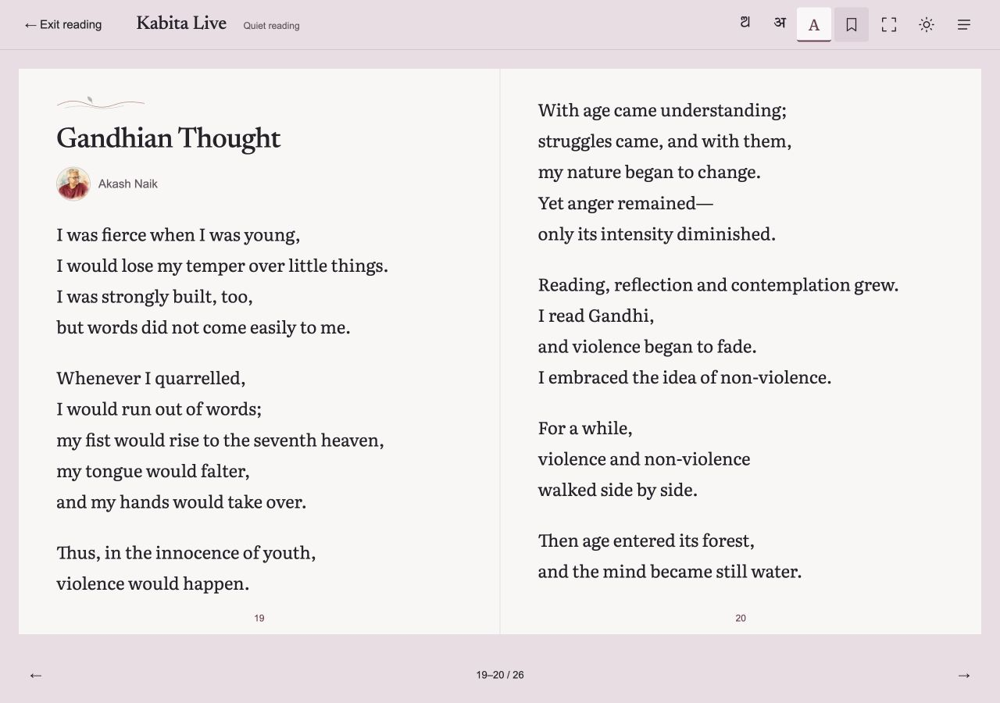

19 October 2026 · Local implementation · Assistant self-review
The reader now belongs to the same Ink & Voice design as the website. No blocking defects were found in the tested scope. Publication, independent editorial review and native-device certification remain separate.

| Regression suite | 168 JavaScript + 34 Python tests passed |
|---|---|
| Public build | Node 24 / Astro build passed |
| All exported pages | 1,317 HTML pages; no broken local files, fragment targets, duplicate IDs, missing titles or missing image alt attributes |
| Link and asset inventory | 35,719 local link references and 34,198 asset references checked; external destinations were not crawled |
| Theme coverage | 1,316 themed pages; search.html is an intentional redirect to Poems |
| Source preservation | 1,017 captured source/config/cover files unchanged; 848 original poem hashes across 48 editions pass |
| Full-edition pagination | Issue 48: 11 poems; all English, Hindi and Odia pages at 1280×900 plus mixed originals at 390×844. 109 logical pages; 1,208 exact line comparisons; no omissions, duplication or unexpected overflow |
| Page families | Home, poems, poets, archive, edition, profile, poem, story, contact and submission checked at 320px and 1440px; no horizontal overflow or unnamed visible buttons |
| Reading controls | Keyboard forward/back, Escape/focus return, exact bookmark restoration, underline persistence/removal, collection filter versus Read all, single-poem selection, optional illustrations and fullscreen F entry/exit passed |
| Enlarged text | 200% root text emulation: reader widths 320/390/768/1000/1101 and masthead at 320; no horizontal overflow. Temporary overrides removed |
| Edge cases | Longest title, longest poem, longest source line/inline breaks and unavailable translation controls inspected at their openings. Long title retains intentional 10px vertical scroll fallback at 320×568 |
| Colour contrast | 12 principal text/background combinations in both themes: minimum 5.00:1 |
Structured verification and evidence list · Reader interaction evidence · Complete export check
KBL-WORK-049 · KBL-DEC-067 · KBL-REV-062. No push or deployment performed.